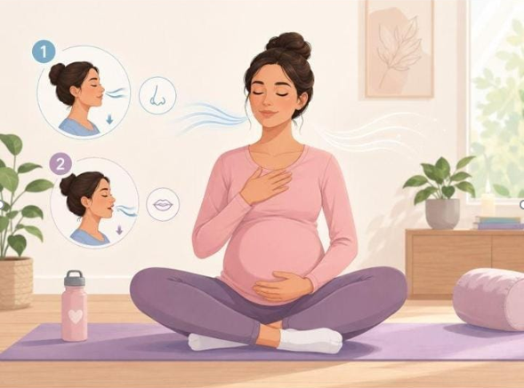
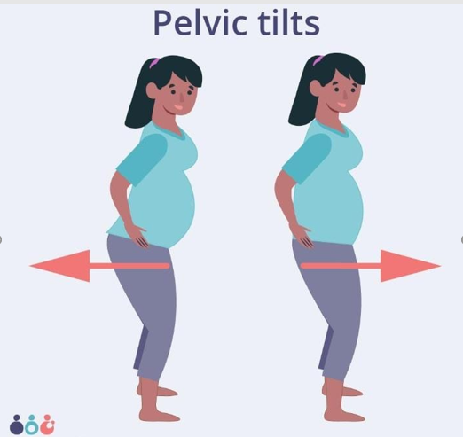
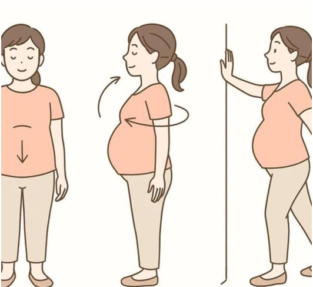
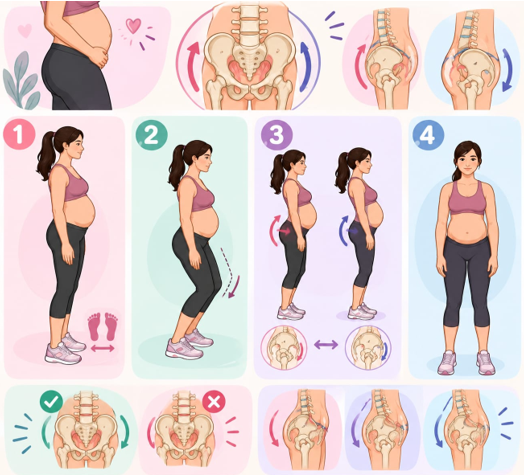

Prepara
Usa ropa cómoda, calzado estable y un espacio despejado.
GUÍA VISUAL · EMBARAZO
Movimiento adaptado, respiración y cuidado del suelo pélvico.
Explorar ejerciciosUsa ropa cómoda, calzado estable y un espacio despejado.
No aguantes el aire ni hagas fuerza excesiva.
Haz los movimientos solo si tu profesional de salud los considera adecuados.
MOVIMIENTOS SUAVES Y CONSCIENTES
Realiza cada movimiento con calma y dentro de un rango cómodo.

Añade aquí la imagen del ejercicio 01Inhala suave · exhala lento
¿Para qué? Favorecer una respiración tranquila. Prueba 5 respiraciones cómodas.
Siéntate cómoda con la espalda apoyada.
Pon una mano en el pecho y otra en el abdomen.
Inhala suave por la nariz; deja que se mueva el abdomen.
Exhala lentamente sin apretar ni aguantar el aire.
Recuerda Hombros relajados y sin forzar el aire. Si causa dolor, detente.

Añade aquí la imagen del ejercicio 02Círculos · lentos
¿Para qué? Soltar suavemente la zona de los hombros. Haz 5 círculos en cada dirección.
Siéntate o ponte de pie con una postura cómoda.
Haz círculos lentos con ambos hombros hacia delante.
Repite el movimiento hacia atrás.
Mantén el cuello relajado y respira.
Recuerda Haz círculos pequeños y sin dolor. Si causa dolor, detente.

Añade aquí la imagen del ejercicio 03Gira · cada tobillo
¿Para qué? Mover los tobillos con suavidad. Haz 5 círculos por sentido y por pie.
Siéntate con los pies apoyados o las piernas cómodas.
Eleva un poco un pie si te resulta cómodo.
Haz círculos lentos con el tobillo.
Cambia de sentido y repite con el otro pie.
Recuerda No fuerces el rango de movimiento. Si causa dolor, detente.

Añade aquí la imagen del ejercicio 04Pelvis · hacia delante y atrás
¿Para qué? Practicar un movimiento pélvico pequeño y controlado. Haz 6–8 repeticiones tranquilas.
Ponte de pie con los pies separados al ancho de las caderas y apoyo estable.
Flexiona un poquito las rodillas si te resulta cómodo.
Inclina suavemente la pelvis hacia delante y después hacia atrás.
Vuelve al centro; no arquees ni fuerces la espalda.
Recuerda Movimiento corto y sin dolor. Si causa dolor, detente.